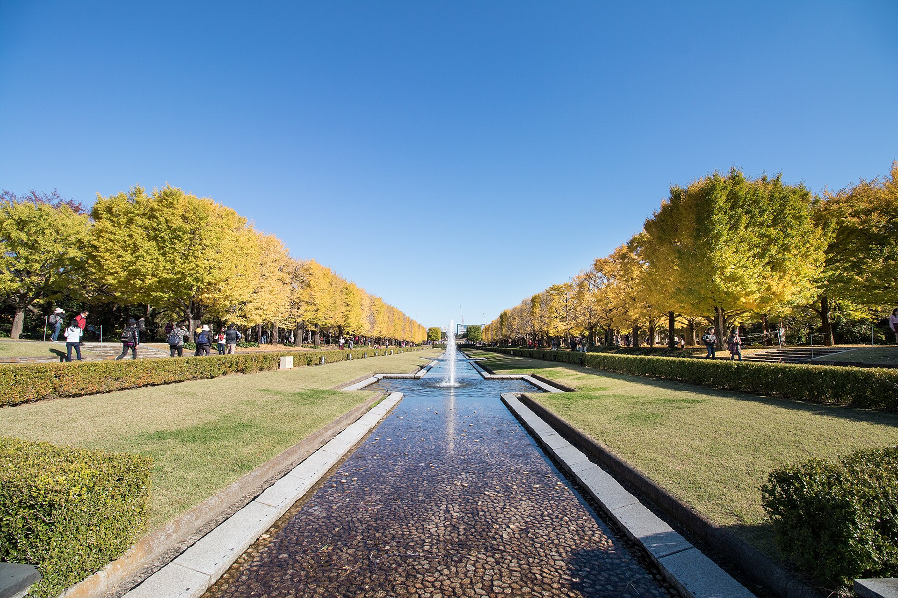
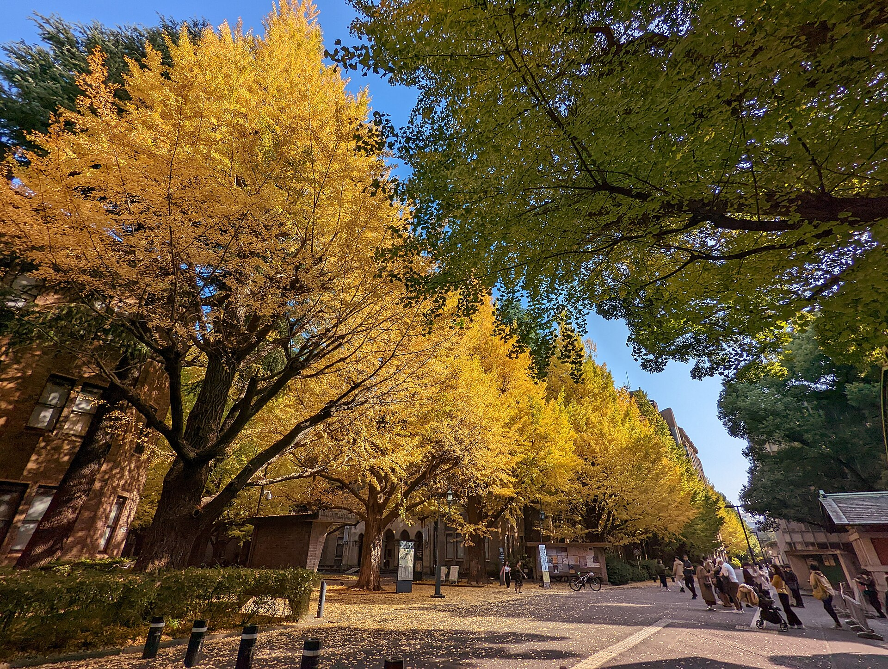
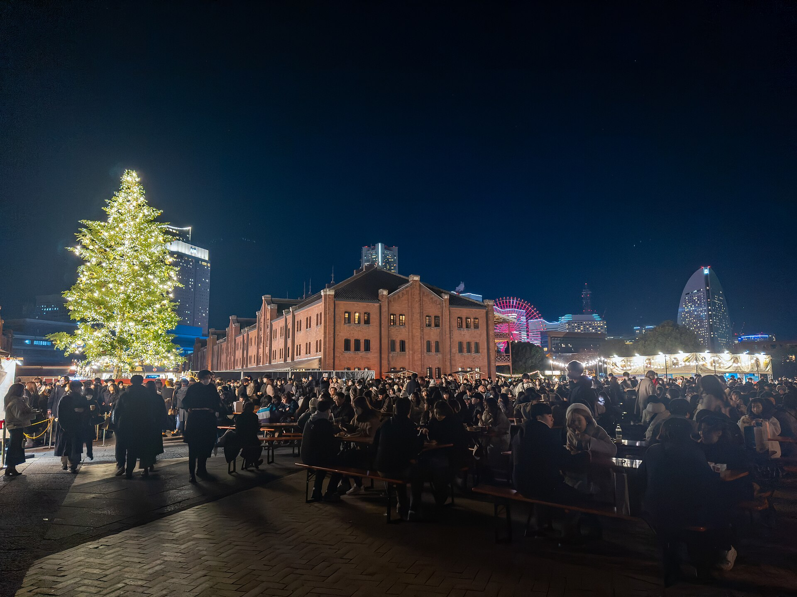
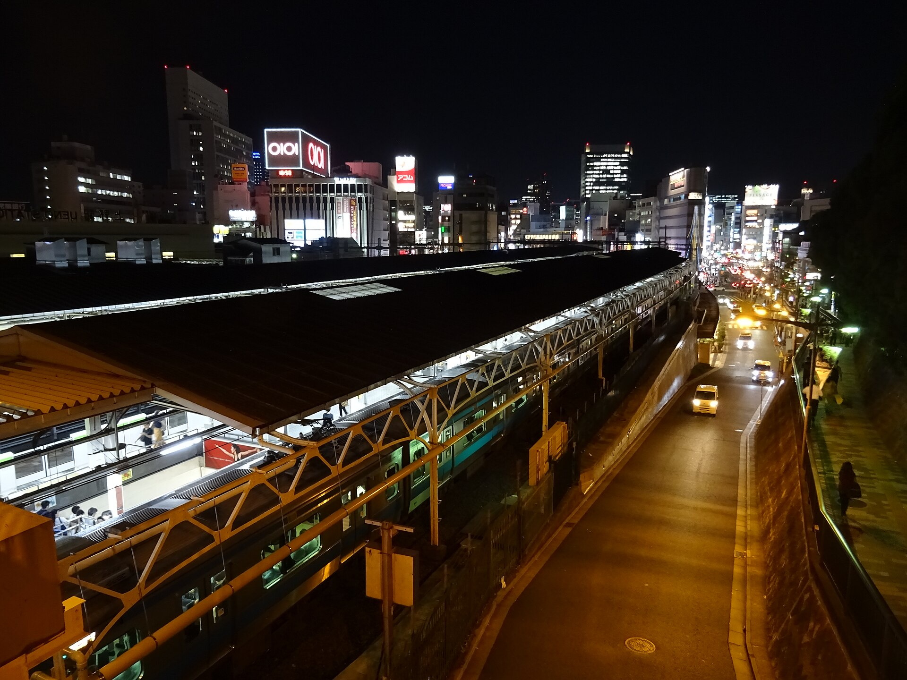
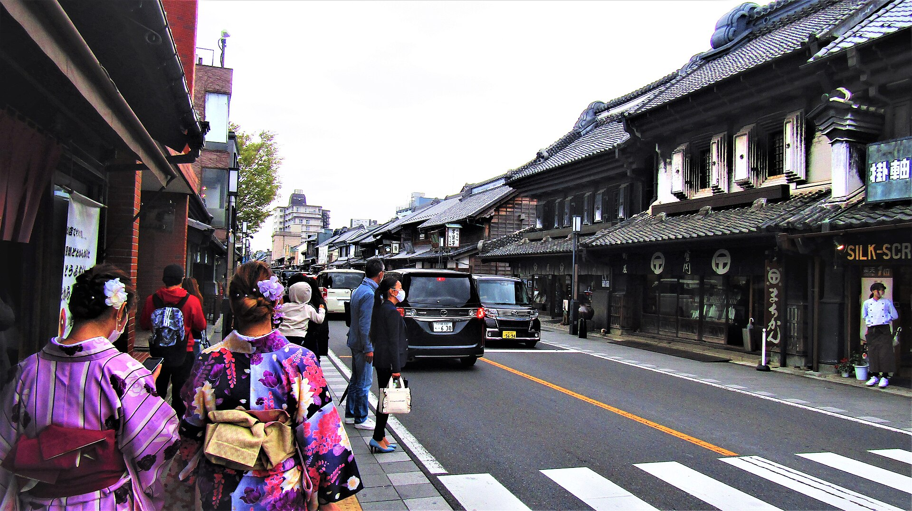
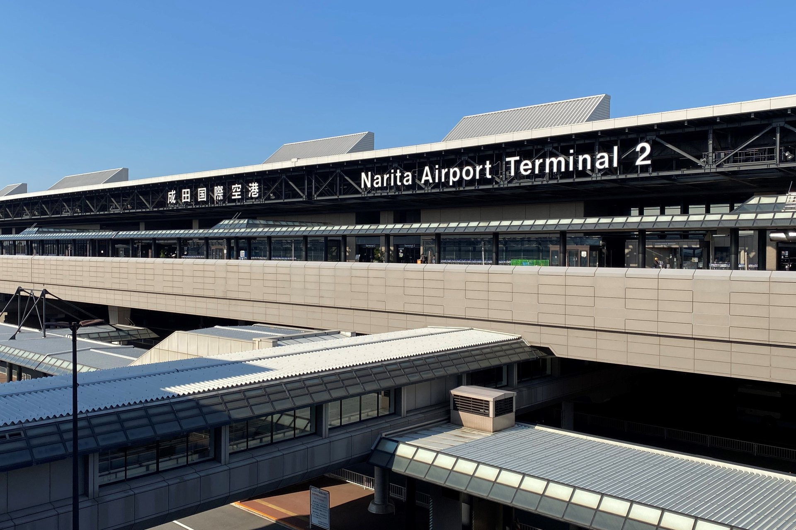

01 · SLOW DOWN
草津住一晚
不是路過泡湯。保留旅館晚餐、夜晚湯畑、朝湯與早餐。

七天走過東京、草津、川越與橫濱：在溫泉慢下來、為秋葉等一道好光，在青山吃一頓和食，再用丸之內與橫濱的聖誕夜景收尾。
草津溫泉、東京秋葉、和食與聖誕夜景，串起七天的節奏。每一段移動，都為下一個值得停留的畫面留出餘裕。
不是路過泡湯。保留旅館晚餐、夜晚湯畑、朝湯與早餐。

東京大學、昭和紀念公園與神宮外苑，各自有不同的城市秋色。

青山川上庵的和食晚餐、丸之內的香檳金街道，最後是橫濱港邊主場。
前兩天收東京秋色，中段去草津放慢，後段以川越與橫濱收尾。點日期可直接查看當天。
地圖看方向與跨區距離，右側看主要交通時間。選擇 D1–D7，可單獨看當天路線。
閱讀方式：地圖為方位示意、不按比例；時間是含一般轉乘的規劃值，不含迷路、排隊與班次等待。2026 正式班表公布後仍需再核對。
先看摘要就夠了。只有需要查時間時，才展開詳細安排。

Ueno · arrival evening上午拍東京大學銀杏、欣賞湯島天滿宮菊花祭；下午留足三小時到御茶之水／神田小川町雪具街，讓發發比較、試穿雪衣雪褲。早上帶空登機箱出門，採買後直接帶箱前往表參道喝下午茶、逛街與晚餐；回鶯谷放箱改為有需要才採用的選項。晚餐暫排青山川上庵，若Visa訂到11/23鶯谷園，則把傍晚活動一起調整至上野、鶯谷一帶。
帶一個登機箱到草津，大行李留鶯谷。抵達巴士總站後聯絡望雲接送，提早寄放行李需確認；下午逛溫泉街，約15:00入住享受私人露天風呂，晚上留給旅館與湯畑。
早餐後再泡一次房內露天風呂，10:00退房；搭10:25巴士下山，經新前橋、高崎與東京前往西立川。縮短白天拍攝，保留銀杏傍晚與日本庭園夜景。

Kawagoe · the old street is the reason清晨拍神宮外苑、白天逛川越；下午直接到東京站吃極味屋，再回鶯谷洗澡、換衣服與休息，約19:30重返丸之內，先看聖誕樹／燈光秀，再逛仲通與東京站夜景。20:00–20:45預留一保堂購物，街景散步接在後面。

Kappabashi · matcha tools, then home帶登機箱逛合羽橋，重點挑陶瓷倒口點茶碗，並補齊11/26一保堂未買到的高山百本立竹茶筅、茶筅架與竹茶杓；出門先看購物勾選清單，已買的不重複買，其他器具已有。淺草午餐後買抹茶粉，14:00左右回鶯谷取齊行李，再去成田；伴手禮留機場買，不排阿美橫、多慶屋。
主行程保持清楚；導航、吃飯、預約與現場提醒集中收納。人在日本時，直接從手機下方快捷列進入。
點景點會以該處為目的地開啟 Google Maps，再按「路線」即可從目前位置出發。交通時間是正常狀況的概略值。
06:20出門；外苑→川越，14:00左右離開川越→東京站，約15:30–17:00極味屋（含候位）→鶯谷飯店洗澡換衣休息→約19:30丸之內先看聖誕樹。燈光秀末場待確認，一保堂有時間才逛；均為規劃區間。
帶登機箱逛店，14:00左右離開淺草回鶯谷取齊行李。Skyliner班次待選、目標約17:00到成田。紀念品到機場買；不排阿美橫、多慶屋。
保留真正順路的店。價位以 ¥ 符號作相對比較，營業時間與菜單仍需在出發前再次確認。
這趟最想吃的燒肉。離住宿基地近，抵達夜不必再跨區；舊版推薦特上部位與厚切牛舌。熱門且主要接受電話聯絡，優先交由 Visa 禮賓協助。
川越後約15:30–17:00預留候位與用餐，八重北1樓改札外；不接受預約，下午不保證免排隊。吃完回鶯谷洗澡換衣休息，再去丸之內，不再另排一頓完整晚餐。
表參道A4出口步行5分鐘，南青山3-14-1。鴨南蕎麥麵 ¥2,750、核桃醬蕎麥麵 ¥1,540；16:00後另收10%服務費。兩人點餐預抓 ¥6,000–8,000（估算，非套餐價），11/23座位尚待預訂。
湯畑附近蕎麥名店；三國蕎麥配舞茸天婦羅是舊版首選。午間排隊時，不犧牲旅館報到時間。
江戶時代延續至今的老鋪鰻魚飯，最符合老街主題。熱門時可能提早停止候位，目前主線是輕食後下午極味屋；只有取消極味屋、改吃川越主餐時才考慮。
同樣是鰻魚老鋪，空間與座位選擇相對多。小川菊候位太久時，僅在取消下午極味屋、改吃川越主餐時作為候補。
11/27 12:00，4人，依已與親戚溝通好的安排進行。
上野池之端的傳統鰻魚與日本料理，座位舒適、可電話預約，適合把最後一餐吃得完整；D7以淺草午餐為主，本店僅回到上野且時間充裕時候補，不為此折返。
上野公園內的老牌洋食。想吃燉牛肉、蛋包飯，若D7改在上野用餐且時間充裕可選；主線為合羽橋採買後接淺草午餐，不另為此折返。
市集攤食不夠或天氣太冷，就直接進館選餐廳；不另外移動，港區夜景時間完整保留。
先處理會售罄或需要人工聯絡的項目；一般市區交通維持 Suica 彈性移動。
合羽橋前田：高山百本立竹茶筅、匹配茶筅架；アサヒサンレッド及附近店：竹茶杓、陶瓷倒口點茶碗。茶粉首選：一保堂明昔20g ×2（單價¥3,024，小計¥6,048）；壽々喜園鶴羽の音20g ×1（¥2,800）＋手軽に本格抹茶30g ×2（單價¥800，小計¥1,600），合計¥10,448／約NT$2,194。各店備選與價格見對應日期逐店清單。其他器具已有，不買套組、不打電話、不預約；庫存不保證，詳見D7逐店清單。11/26約19:30回到丸之內先看聖誕樹／燈光秀，一保堂新丸大樓B1預留20:00–20:45購物，找高山百本立、架、茶杓，有喜歡且有貨就買；11/28重點挑陶瓷、補缺件，買齊就不重複買。
聯絡 +81 3-5411-7171 確認座位。目標兩人不含酒 ¥6,000–8,000，依實際點餐計價；16:00後另加10%服務費。
首選11/22 19:30、2位（19:00–20:30可接受）；備選11/23 18:00–20:30（首選19:00）、11/26 20:00–21:00、11/25 20:30–21:00。尚未確認訂位；Visa預計10/25左右回覆。提供電話 +81 3-3874-8717，請禮賓先確認最新訂位開放規則，再確認營業、取消規則與座位條件。
10/24台灣09:00訂11/24草津・四萬1號，上野10:00→長野原草津口12:18，接12:31巴士→草津12:53。回程10:25巴士→10:53長野原草津口，11:11普通車→12:39新前橋，12:52普通車→13:02高崎，再接13:16淺間616號→東京14:12；新幹線指定席10/25台灣09:00起購買，普通車與路線巴士不訂座。
上野市集、丸之內哈利波特活動與橫濱紅磚市集已確認。橫濱11/6台灣11:00開賣，11/27普通票¥500／人；昭和11/18起買11/25日本庭園＋入園套票¥1,600／人。丸之內演出時刻與 BALLPARK 另待核對。
不是背景知識，而是到了日本真的可能救回時間的提醒。
D6 小田急快速急行不停鶴卷溫泉；搭急行，或在本厚木／秦野換車。草津巴士與特急班距長，前一晚再查一次。
11/23帶空箱逛東大、雪具街，買完直接接表參道；11/24帶登機箱住望雲，大行李留鶯谷。11/25在西立川站公園口通道寄箱，晚上原處取回。櫃位尚未預約，先量含輪子、把手外尺寸再選櫃型。西立川寄物、櫃型尺寸。業者目前公告首班車至末班車；M現場¥600／預約含費¥1,100，L現場¥800／預約含費¥1,300，依預約頁確認。
11 月下旬入夜可能接近 0°C，也可能結冰。手套、保暖層與防滑鞋是必要裝備；泡湯後外出尤其注意溫差。
2026/11/1 起採 Refund 制度。商品與收據集中放置，D7 提早抵成田；實際退款方式依店家與國稅廳最新公告。
出發前待辦與11/28抹茶採買逐項打勾；交通、票券與備案可在工具箱及資訊中心展開查看。
勾選狀態只存在這台裝置，不會上傳。
2026.10.23 整站檢查：同步行程、購物與訂位委託，修正圖片裁切和失效JR連結。上野、丸之內及橫濱公告已核對；昭和夜間活動已確認，青山川上庵座位待訂，親戚午餐已完成。
預訂時程、行李、保暖與突發狀況都保留在這裡；平常收合，查資料時才展開，不干擾閱讀行程。